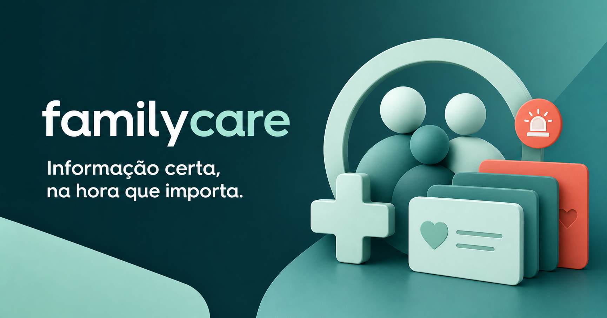
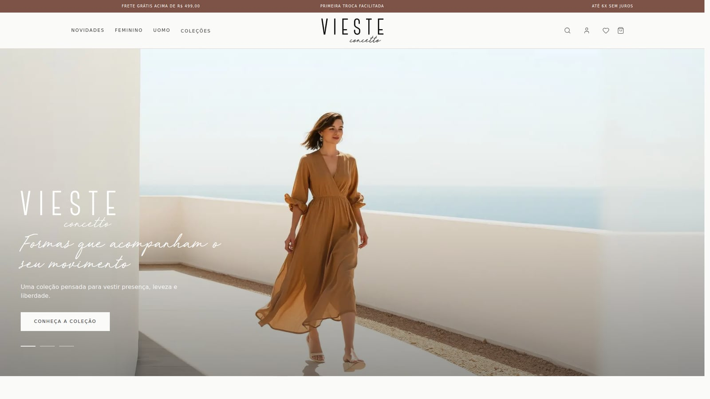
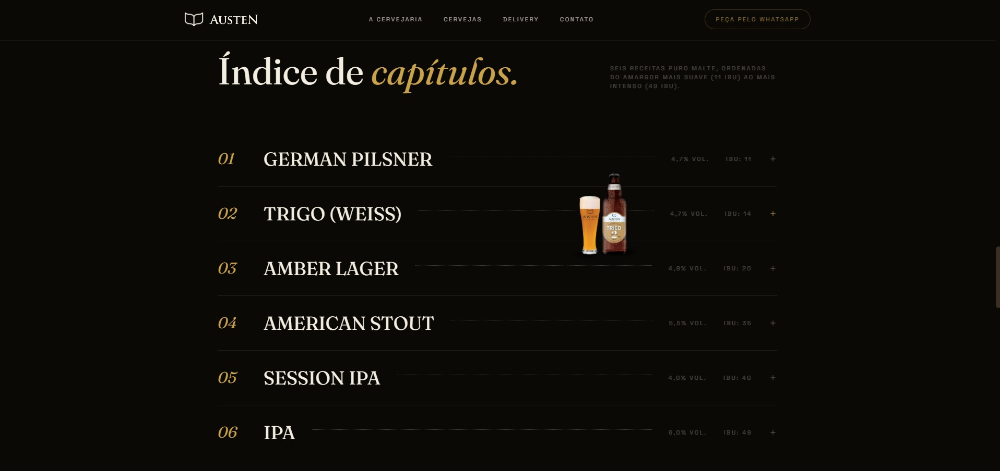
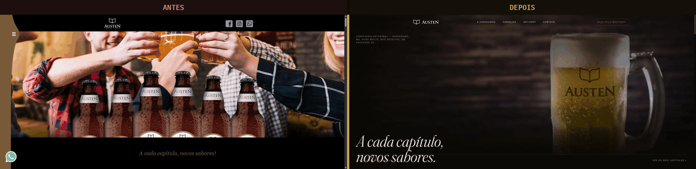
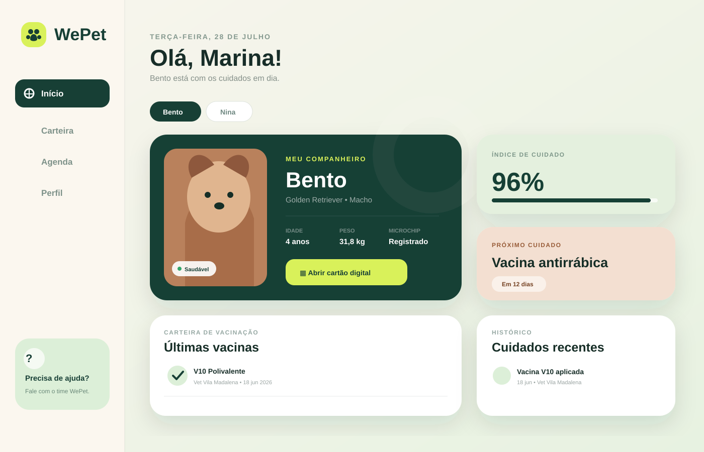
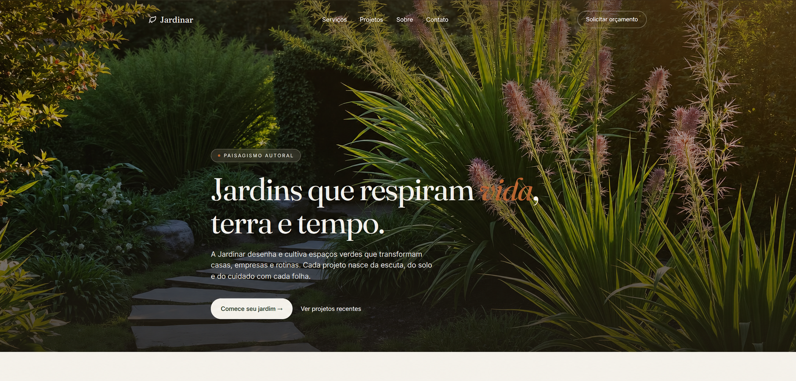

Full-Stack Developer · React · Node.js · TypeScript
Precise
interfaces.
I build web products end to end, focused on visual fidelity, performance and clean code — from the responsive layout to the API that feeds the interface.
About
I am a Full-Stack Developer focused on React and Node.js (JavaScript ES6+), with hands-on experience in freelance projects. I specialize in taking a product from design to API: functional interfaces with high visual fidelity and an organized back end behind them.
I work confidently with responsive layouts using semantic HTML5 and CSS3 (Flexbox and Grid), reusable components and state management in React, as well as building REST APIs with Node.js and Express and integrating them with databases. More than implementing screens, I deliver solutions that are fast, consistent and pleasant to use.
I work with AI-assisted development every day: I use Claude Code and OpenAI Codex inside my workflow and configure the environment behind them — custom skills, MCP servers and specialized agents for code review, testing and automating repetitive work. In practice, I ship faster without giving up review and quality.
- Stack
- React · Node · AI
- Projects delivered
- 8
- Current focus
- React / Node
Projects
8 selected-
01
FamilyCare
Web app to organize a family's health information: relatives, medications, allergies and comorbidities, with quick search and an emergency mode.

Read the full case study
Problem
It came from a real need: during a medical emergency in my family (my father's stroke), there was no fast access to critical health information — current medications, allergies, blood type. Generic note-taking apps are not designed for that kind of urgency, where every second counts.
Technical decision
I built it with Next.js + React + TypeScript and a centralized hook (use-family-store) to handle state and local persistence. I prioritized real accessibility, not just visual: focus management in modals, keyboard navigation, closing with Escape — details that matter under stress. I also wrote automated tests with Vitest and Testing Library covering the most sensitive flows (registration, emergency mode, switching between relatives), not only to guarantee quality but to prove I can genuinely test React components beyond the basics.
Outcome
An "emergency mode" that strips information down to the essentials in seconds, full registration of relatives/medications/allergies, and a test suite covering the application's critical flows. It is currently the project that best represents my technical maturity and my ability to turn a real pain point into a product.
-
02
Vieste Concetto
Redesign of the institutional site and e-commerce of a Brazilian fashion brand, with an editorial experience, catalog, search, favorites and shopping bag.

Read the full case study
Problem
The Vieste Concetto online store (a real contemporary fashion brand) had a digital experience that did not reflect the brand's editorial identity — generic navigation and weak visual hierarchy between campaign, product and content, which hurt how the brand's value was perceived online.
Technical decision
I chose Next.js 16 (App Router) + React 19 for SSR and native image optimization — essential in a fashion e-commerce with heavy photography. TypeScript to safely type the catalog, cart and favorites. Tailwind CSS 4 to quickly rebuild the brand's design system (official palette, typography, vectorized logos). I kept bag and favorites persistence local at this stage, isolating the presentation layer from the future backend and checkout integration — a deliberate decision to deliver value fast without coupling the UI to an API that does not exist yet.
Outcome
A complete functional redesign: storefront, catalog, search, favorites, bag and sign-up, fully faithful to the brand guidelines and with optimized performance. The before/after comparison in the repository shows the leap in visual and experience quality between the published site and the redesign.
-
03
Scherr Química
Responsive institutional site for an industrial water treatment company. First freelance project, delivered with a focus on performance and SEO.

Read the full case study
Problem
Scherr Química (an industrial water treatment company where I had previously worked as Production Manager) had no digital presence of its own — it relied on direct contact and word of mouth to present its services to new B2B clients. It lacked an institutional site that conveyed technical credibility from the very first commercial touchpoint.
Technical decision
As my first freelance project, I chose semantic HTML5, CSS3 (Flexbox/Grid) and vanilla JavaScript — no framework, to deliver fast and with maximum performance, since an institutional site does not need the complexity of an SPA. I prioritized semantic structure and on-page SEO best practices (heading hierarchy, meta tags, optimized images) to improve the company's organic ranking, and validated responsiveness across multiple devices, since much of the B2B audience makes first contact from a phone.
Outcome
Institutional site delivered on schedule, fully faithful to the design requested by the client. It was my first paid freelance project — and a particular milestone of trust, since the client was a company where I had previously worked, which reinforces the credibility of the delivery.
-
04
Austen Cervejaria
Complete redesign of the institutional site of a craft brewery in Vespasiano, Brazil: a narrative experience told in "chapters", coordinated scroll animations and a fully responsive layout.

Read the full case study
Problem
The current Austen Cervejaria site (a real brewery in Vespasiano, Brazil) is outdated, breaks on mobile devices and does not reflect the quality of the product. Since most of the audience arrives from a phone, the brand's first impression online falls well below what it delivers in the bottle.
Technical decision
I built a prototype as an unsolicited, cold proposal to show in practice what a modernization would bring. I chose React 19 + Vite for build speed and DX, Tailwind CSS to rebuild the brand's design system, and an animation stack (GSAP + ScrollTrigger + Lenis + Split Type) that reproduces the finish of premium sites built in Framer/Webflow. The beer content was centralized in a single data file (beers.js), separated from the components, to make maintenance easier.
Outcome
An editorial experience where each label is a "chapter", with fluid scrolling, refined transitions and real responsiveness fixing the flaws of the original site. The before/after comparison shows the leap in visual and experience quality.

-
05
WePet
Digital card that centralizes health, vaccination and care information for pets in a responsive, easy-to-consult experience.

-
06
Jardinar
Landing page for a bespoke landscaping company, with services, recent projects and a contact form.

-
07
iPhone 17 Landing Page
Recreation of the iPhone 17 Pro page focused on componentization, responsiveness and visual fidelity to Apple's design.

-
08
Clothing E-commerce
Responsive e-commerce interface with page-to-page navigation and product organization using Flexbox and Grid.

Stack
- React
- TypeScript
- JavaScript ES6+
- Next.js
- Node.js
- Express
- REST APIs
- Claude Code
- OpenAI Codex
- AI Agents
- MCP
- Workflow automation
- Vite
- Tailwind CSS
- GSAP
- Vercel
- Cloudflare Workers
- SQL/NoSQL databases
- Semantic HTML5
- CSS3 / Grid / Flexbox
- Design Systems
- Performance
- Accessibility
- Technical SEO
- Git & GitHub
Contact